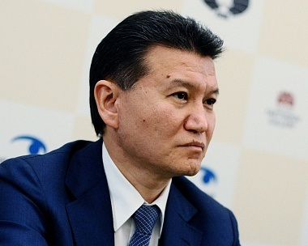
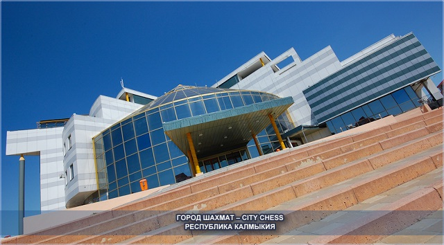
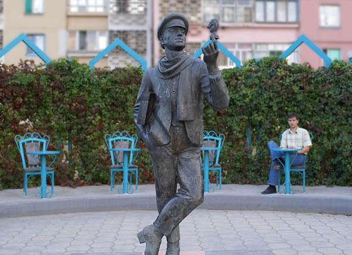
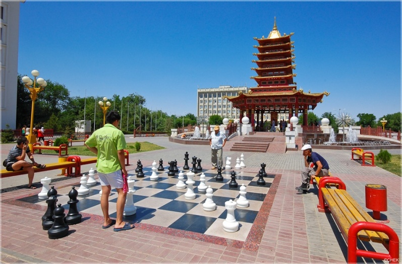
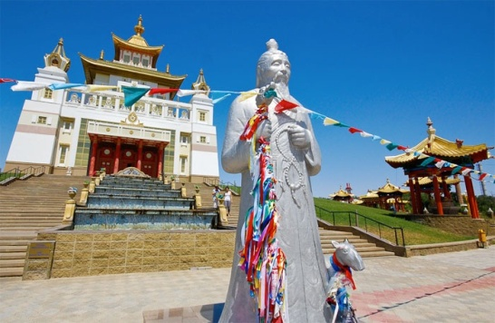
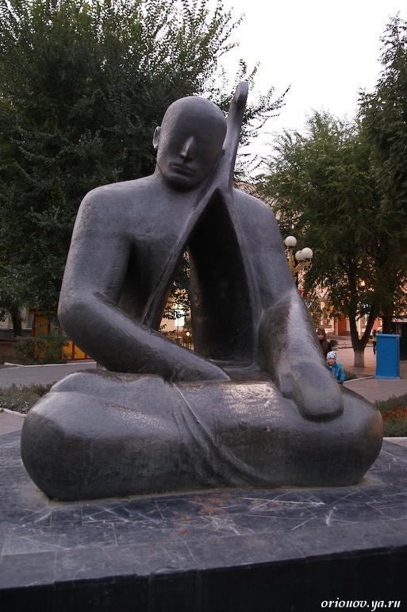

|
|
|
|
|
|
Хан и шах Под таким заголовком появилась в издании ИТОГИ, перепечатанная популярным еженедельником «24 часа» в № 5 за 2013 г. В ней Виктория Юхова беседует с президентом ФИДЕ и экс-президентом республики Калмыкия Кирсаном Илюмжиновым. По сути – это трогательная история о том, как выходец из обычной калмыцкой семьи на далёкой окраине российской ойкумены стал руководителем мирового шахматного движения.
 Всё началось с того, что игре в шашки а затем и в шахматы его обучил в пятилетнем возрасте родной дед. В 1-м классе Кирсан стал чемпионом республики среди школьников, в 15 лет – чемпионом Калмыки среди взрослых. Во время службы в армии был чемпионом Северо-Кавказского округа, во время учёбы в МГИМО – чемпионом среди студентов Москвы. В итоге стал кандидатом в мастера спорта. И с 1995 года – президентом Международной федерации шахмат. После чего дважды (2006 и 2010 гг) переизбирался на этот пост. Но особенно скандально – в последний раз, о чём В. Юхова скромно умалчивает в своём заказном интервью. Интересно – на что всё же рассчитывают журналисты с такой гибкой спиной? В эпоху интернета достаточно ткнуть пальчиком в поисковик, чтобы получить всестороннюю информацию о нашумевшем событии, каким безусловно являлось переизбрание президента ФИДЕ. Что мы и сделали. И стало ясно, что всё было не так гладко, а последнее его переизбрание превратилось в крупный международный скандал, детали которого, в частности, были освещены на сайте Федерации шахмат Псковской области. Некто Доктор Живаго (doctor zhivago), шахматный изобретатель, приводит статью Александра Никитина (заслуженного тренера СССР, международного мастера по шахматам) под названием «Почти шахматный анализ одной почти шахматной партии». Из самой статьи и её комментариев следует, что указанная партия по переизбранию президента ФИДЕ была разыграна в кулуарах президента Дмитрия Медведева. И состояла она в том, что Кремль долгое время не мог ограничить срок правления нового калмыцкого правителя. Зная любовь Кирсана Николаевича к шахматам, можно было предложить ему отказаться от пятого срока правления в обмен на долгосрочный пост президента ФИДЕ. Что, вероятно, и было сделано. В итоге Хан превратился в шахматного Шаха, если продолжать расшифровку названия статьи В. Юховой. (По факту Кирсан Николаевич отказался от пятого срока правления в Калмыкии 6 сентября, а был переизбран в ФИДЕ на новый срок 29 сентября – то есть через 3 недели.) В то время как ему противостоял Анатолий Карпов при явной поддержке Гарри Каспарова и международной общественности. «Почему бы не дать посидеть на этой должности Анатолию Карпову, которого прекрасно знают во всем мире как символ легендарной российской шахматной школы и общественного деятеля? Тем более, что в поддержку Карпова высказалось более 20 федераций со всего мира, а за Илюмжинова – только турецкая, – сетует комментатор, разводя руками. - После его воспоминаний о встречах с такими изгоями, как Саддам Хусейн или мюнхаузеновского типа россказнях о беседах с инопланетянами (психиатры, ау!), нет веры его планам распространения шахмат на всю планету и вообще, всему тому, о чем он говорит. К тому же вновь поднялась тема зверской расправы в Элисте с оппозиционной журналисткой Ларисой Юдиной в 1998 году. Заказчик этого преступления, конечно, найден не был, но 21 мая на сайте «Эха Москвы» было опубликовано заявление партии «Яблоко», где выдвижение Илюмжинова называется позором России. Прочтите это заявление и леденящие кровь вспоминания человека, побывавшего на месте расправы с беззащитной женщиной, умолявшей бивших её негодяев не убивать её…» Однако тут же снимаются белые одежды с противника Илюмжинова – Карпова. (Газета.Ру от 03.06.2010, ссылка на «Взгляд»и Компромат.ру).
«Анатолий
? это очень умный человек и выдающийся
шахматист. Я ожидал, что от него последуют
какие-то конструктивные предложения…
Но от него идет пока одна грязь!» ?
посетовал Макропулос. Напомним, что
12-й чемпион мира уже не раз делал заявления
о существовании в нынешней ФИДЕ коррупции,
за что сама федерация собирается вызвать
гроссмейстера на заседание комиссии
по этике… Карпов своими бездоказательными
обвинениями очень сильно вредит репутации
ФИДЕ и имиджу шахмат, считает Георгиос
Макропулос, экс-президент ФИДЕ. Илюмжинов
за время своей работы во главе ФИДЕ
сумел объединить шахматный мир. Карпов
же пытается снова его расколоть. «Мы все – одна семья, но очень склочная» - именно так предложил расшифровать знаменитый девиз ФИДЕ А. Никитин, насмотревшись на шахматные баталии за пределами шахматной доски. И всё же Илюмжинову есть, что занести в свой актив. Он сказал: «Моих личных средств на шахматы ушло более 60 миллионов долларов, но зато я объединил шахматный мир… А самое главное – о Калмыкии узнали. Когда в 1998 году мы провели у себя шахматную Олимпиаду, в республику съехались представители 129 стран». Парадокс состоит в том, что, не смотря на большую популярность романа Ильфа и Петрова, вполне настоящие Нью-Васюки стали более известны как Сити-Чесс,



шахматный городок в Элисте – не на берегах Волги в центре России, а в прикаспийской полупустыне. Поделился Кирсан Николаевич и своей мечтой: «Чего сегодня не хватает? Думающих людей. У меня есть мечта: увеличить их количество до миллиарда. Арифметика простая: на планете живут семь миллиардов людей, а в шахматы играют 600 миллионов… Если один миллиард будет играть в шахматы, значит, совокупный IQ человечества повысится. Значит, велика вероятность, что из этого миллиарда в политику, в правительства попадёт больше умных людей. Значит, количество неправильных решений будет уменьшаться. Следовательно, будет меньше войн и меньше кризисов... Одна из программ, которой я сейчас активно занимаюсь: вводить шахматы как предмет в школах, езжу по странам с этой идеей. Мне кажется, это – хорошее дело». М-да… Как оказывается всё просто. Достаточно лишь не принять во внимание массу других аспектов оздоровления человечества, давно блуждающего в потёмках. Что-то не похоже на уровень выпускника МГИМО, крупного общественного деятеля и бизнесмена. Откуда такая наивность? Из указанной программы торчат весьма развесистые уши в виде простенькой корпоративной саморекламы. Собственно говоря, ничего нового в его предложении нет. С такими идеями давно выступают представители многих шахматных спортивных федераций. Которые вряд ли всерьёз верят в эту идею в изложении теперь уже президента ФИДЕ, но получить вместе с Илюмжиновым приличное финансирование и громадное количество рабочих мест во всех школах вполне согласны. Каково же наше отношение к указанной идее? Если речь идёт о повышении интеллектуального уровня школьников с помощью комбинационных игр, то почему для этого нужно использовать только общеизвестные шахматы? И только со спортивным уклоном? Моя программа СТРАТЕГИЯ для дополнительного образования школьников включает в себя множество настольных игр, логических задач и головоломок. Она основана на школьных курсах математики, на массовой серии книг об интеллектуальных играх издательства МИР, журнала «Наука и жизнь», публикаций в интернете и.д. И вовсе не предполагает обязательной подготовки чемпионов, для чего у нас давно имеются специальные учебные центры и школы. Чемпионов требуются не так уж много. Таланты нужно искать, лелеять, направлять к опытнейшим специалистам. А для миллионов школьников нужна более обширная и гибкая программа – и она давно есть.

 Что касается дополнительной информации о Калмыкии, то она есть в сети. Элиста со времён советской эпохи сказочно преобразилась. Теперь это один из крупнейших буддийских центров России, вполне современный город с весьма грамотным сочетанием традиций и новаторства, конкурирующий в архитектурно-художественном плане с Астаной и Ташкентом. Валерий Трубицын Публикация 24.09.2013 |
|
|
|